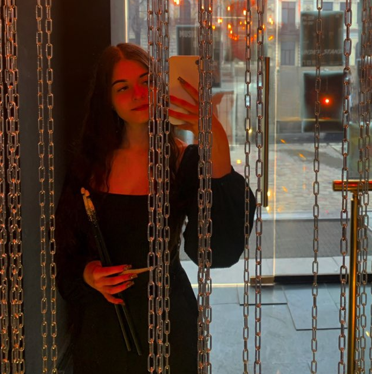

Вітаю на моєму портфоліо
Мене звати Єлізавета Кравцова. Я майбутній Frontend-розробник, який вивчає HTML та веброзробку.
Моя мета — створювати сучасні та зручні вебсайти.
"Успіх — це постійне вдосконалення."
Мої цілі
- Вивчити HTML та CSS
- Навчитися створювати адаптивні сайти
- Стати професійним Frontend-розробником
Моє фото
